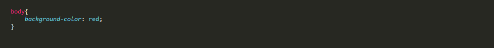
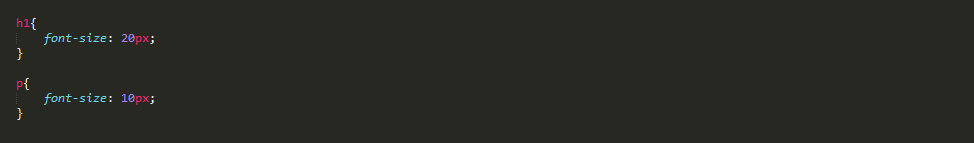
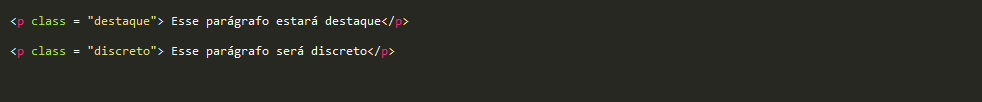
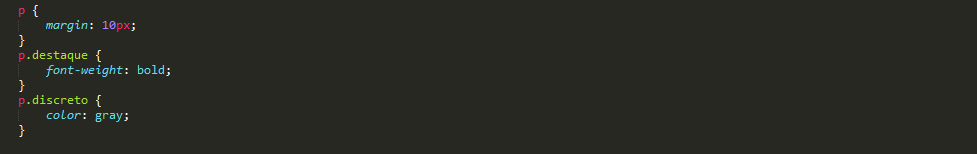
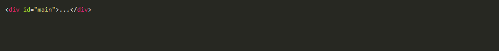
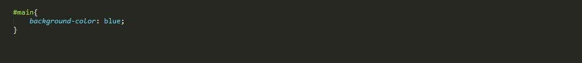
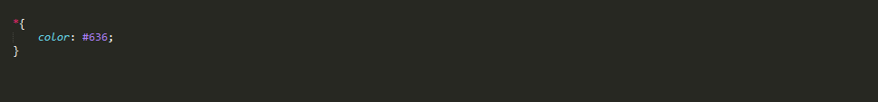

O que é CSS?
O Cascading Style Sheets (CSS) é uma linguagem utilizada para definir a apresentação (aparência) de documentos que adotam para o seu desenvolvimento linguagens de marcação (como XML, HTML e XHTML e etc..). O CSS define como serão exibidos os elementos contidos no código de um documento e sua maior vantagem é efetuar a separação entre o formato e o conteúdo de um documento.
História do CSS
Com a evolução dos recursos de programação, as tecnologias estavam adotando cada vez mais estilos e variações para deixá-las mais elegantes e atrativas para os usuários. Com isto, linguagens de marcação simples como o HTML, que era destinada para apresentar os conteúdos, também precisaram ser aprimoradas. Foram criadas novas tags e atributos de estilo para o HTML e em resumo, ele passou a exercer tanto a função de estruturar o conteúdo quanto de apresentá-lo para o usuário final. Entretanto, isto começou a trazer um problema para os desenvolvedores, pois não havia uma forma de definir, por exemplo, um padrão para todos os cabeçalhos ou conteúdos em diversas páginas. Ou seja, as alterações teriam que ser feitas manualmente, uma a uma. A partir destas complicações, nasceu o CSS. Primariamente, foi desenvolvido para habilitar a separação do conteúdo e formato de um documento (na linguagem de formatação utilizada) de sua apresentação, incluindo elementos como cores, formatos de fontes e layout. Esta separação proporcionou uma maior flexibilidade e controle na especificação de como as características serão exibidas, permitiu um compartilhamento de formato e reduziu a repetição no conteúdo estrutural de um documento.
Inclusão do CSS no HTML
CSS descreve como os elementos HTML devem ser exibidos na tela, no papel ou em outras mídias .
CSS economiza muito trabalho. Pode controlar o layout de várias páginas da web de uma só vez.
CSS pode ser adicionado aos elementos HTML de 3 maneiras:
- Inline - usando o atributo style em elementos HTML
- Interno - usando um
<style>elemento na<head>seção - Externo - usando um arquivo CSS externo
A maneira mais comum de adicionar CSS é manter os estilos em arquivos CSS separados.
CSS Inline
É usado para aplicar um estilo exclusivo a um único elemento HTML.
Usa o atributo style de um elemento HTML.
Este exemplo define a cor do texto do <h1> elemento para azul:
<h1 style="color: blue">Texto em azul</h1>
CSS interno
Um CSS interno é usado para definir um estilo para uma única página HTML.
Um CSS interno é definido na <head> seção de uma página HTML, dentro de um <style> elemento.
CSS externo
Uma folha de estilos externa é usada para definir o estilo de muitas páginas HTML.
Com uma folha de estilo externa, você pode alterar a aparência de um site inteiro, alterando um arquivo!
Para usar uma folha de estilos externa, adicione um link a ela na <head> seção da página HTML.
Regras
Para utilizarmos estilos CSS em um elemento, fazemos uso das regras CSS. Uma regra é escrita como o exemplo abaixo:
No exemplo acima, definimos como cor de fundo da tag body a cor vermelha. Uma regra é feita dos seguintes componentes:
- Seletor(eres): um dos mais poderosos aspectos CSS, permite que selecionemos qualquer elemento na página. No exemplo acima, estamos selecionando a tag body.
- Chaves("{" e "}"): contém as declarações CSS.
- Declarações: cada declaração aplica um estilo específico para o elemento ou elementos selecionados.
Todas as declarações são terminadas por ponto-e-vírgula ";".
Seletores
Seletor tipo (tags)
É o seletor mais abrangente da CSS, ele casa com todos os elementos encontrados da tag escolhida, exemplo:
Seletor de classe
Podemos aplicar o seletor ao atributo class de qualquer elemento HTML. Se a intenção é aplicar a mesma regra CSS a diferentes elementos, mas não a todos de uma tag, você pode utilizar um seletor de classe, segue exemplo:
Código HTML
Código CSS
O uso do seletor de classe possibilita estilos diferentes para o mesmo tipo de elemento, exemplo:
Seletor de id
O identificador id pode ser aplicado a maioria dos elementos HTML só que ele deve ser único em sua página.
Código HTML
Código CSS
A CSS deve ser precedidada pelo sinal # e imediatamente seguida pelo nome, veja:
Seletor universal
É aplicado a todos os elemenos que estiverem dentro do body
